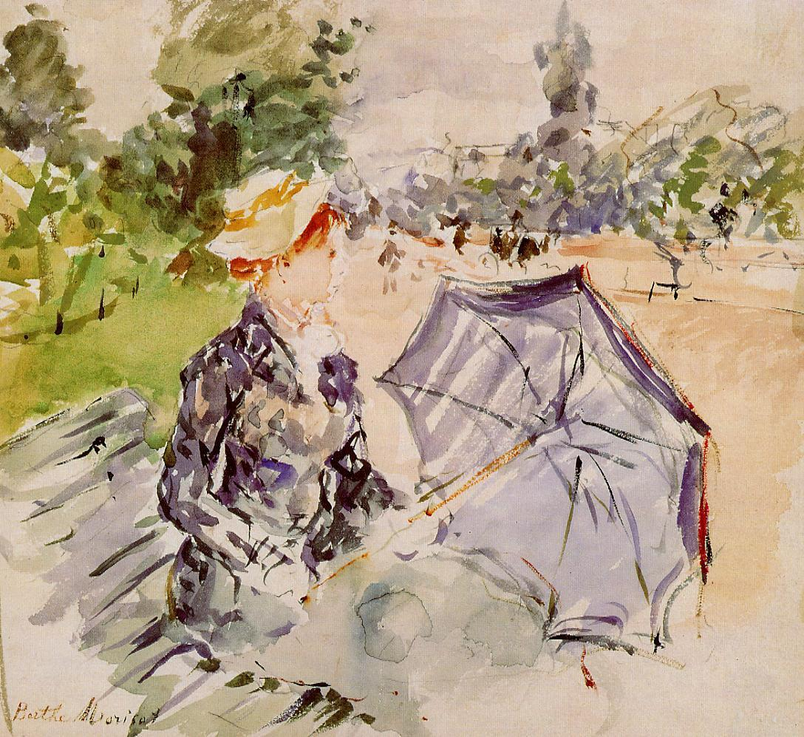

Tags: gardens-and-parks, forests-and-trees
Style: Impressionism
Artist: Morisot Berthe
Title: Lady with a Parasol Sitting in a Park
Year: 1885
Genre: genre painting
Categories: book_jacket (16.9%); handkerchief (15.7%); volcano (11.3%); cliff (6.5%); envelope (4.3%)